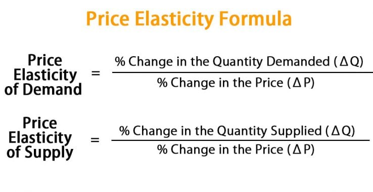

| 🌸 Lesson — Price Elasticity |

Ano ang Price Elasticity?
Ang Price Elasticity ay ang sukatan kung gaano kabilis o kalaki ang reaksyon ng mamimili o prodyuser sa pagbabago ng presyo. Mahalaga ito upang malaman ng mga negosyante at ekonomista kung gaano kasensitibo ang merkado sa pagbabago ng presyo.
Price Elasticity of Demand (PED)
Sinusukat kung gaano kabilis magbago ang dami ng demand kapag nagbago ang presyo.
Formula: % pagbabago sa demand ÷ % pagbabago sa presyo
- Elastic (>1): Malaki ang reaksyon — kaunting taas ng presyo, bumabagsak agad ang demand. Halimbawa: milk tea, gadgets.
- Inelastic (<1): Kahit tumaas ang presyo, patuloy pa rin ang pagbili. Halimbawa: bigas, gamot, gasolina.
- Unitary (=1): Pantay ang pagbabago ng presyo at demand.
- Perfectly Elastic (∞): Kaunting taas lang ng presyo, wala nang bibili.
- Perfectly Inelastic (0): Kahit tumaas presyo, pareho pa rin ang demand. Halimbawa: insulin.
Price Elasticity of Supply (PES)
Sinusukat kung gaano kabilis magdagdag ang prodyuser ng supply kapag tumaas ang presyo.
Formula: % pagbabago sa supply ÷ % pagbabago sa presyo
- Elastic Supply (>1): Mabilis magdagdag ng supply. Halimbawa: cupcakes, t-shirt printing.
- Inelastic Supply (<1): Mabagal ang produksyon kaya mahirap dagdagan ang supply. Halimbawa: mangga, kotse.
- Perfectly Inelastic (0): Hindi nadaragdagan kahit tumaas presyo. Halimbawa: antigong bagay.
- Perfectly Elastic (∞): Walang limit ang supply basta may demand.
Mga Salik na Nakaaapekto
Para sa Demand: Pangangailangan o luho, may kapalit ba, kakayahan ng mamimili, at oras ng pag-adjust.
Para sa Supply: Bilis ng produksyon, availability ng resources, teknolohiya, at panahon ng produksyon.
Halimbawa sa Totoong Buhay
- Kapag tumaas presyo ng milk tea, maraming estudyante ang magtitipid — elastic demand.
- Kapag tumaas presyo ng bigas, bibilhin pa rin — inelastic demand.
- Kung tumaas presyo ng cake, mabilis magdagdag ang baker — elastic supply.
- Kung tumaas presyo ng mangga, hindi agad madaragdagan — inelastic supply.